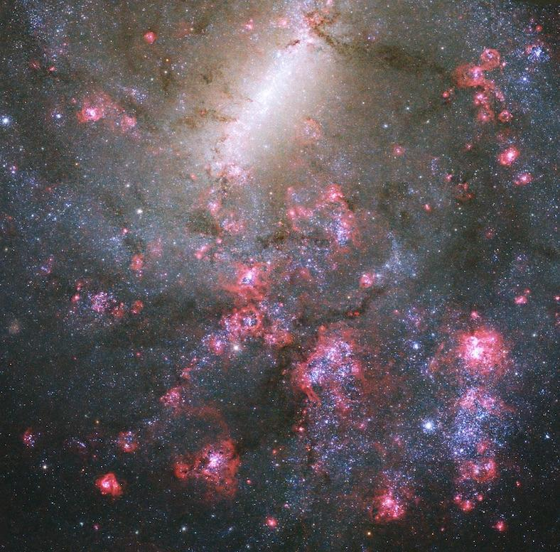
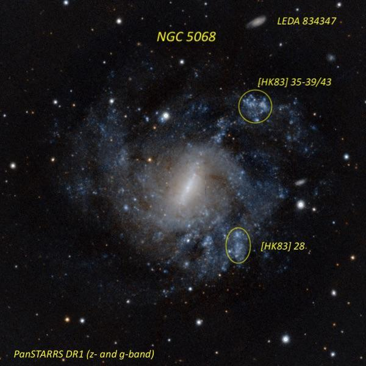

NGC 5068, the comet imposter
- Name: NGC 5068 = ESO 576-029 = MCG -03-34-046 = UGCA 345 = PGC 46400
- RA: 13h 18m 54.6s
- Dec: -21° 02' 20" (J2000)
- Constellation: Virgo
- Type: SBc
- Size: 7.2' × 6.3'
- Magnitude: 10.5V, 11.6B
William Herschel discovered NGC 5068 on March 10th, 1785, during his 709th sweep. After the 5th-magnitude star Psi Hydrae had passed through his field, a new nebula entered the eyepiece field nearly 10 minutes later and roughly 2° to the north, which he recorded as "faint, large, irregularly round, brightest in the middle, but very gradually." In his first catalog of 1000 discoveries, it carried the designation II 312, the 312th object in his class of "faint nebulae." But that wasn't the end of the story, which is told in Wolfgang Steinicke's book "Observing and Cataloging Nebulae and Star Clusters".
German astronomer Julius Schmidt (director of the Athens Observatory) -- using just a 6.2-inch Plössl refractor -- claimed that he had searched for and found Comet Bruhns on January 21st, 1865 and published an offset for the comet from a nearby 9th magnitude star. The following year, though, he realized his mistake and retracted his observation, stating it was probably a different comet or a nebula. Nineteen years later, Austrian astronomer Johann Palisa measured an accurate micrometric position for this nebula and referred to it as Schmidt's nebula of 1865. Finally, in 1885 German astronomer Wilhelm Tempel cleared up the confusing situation when he published a note explaining that Schmidt and Palisa's nebula had been discovered 100 years earlier by William Herschel!
NGC 5068 is classified as a face-on barred spiral (SBc). It lies at a distance of ~16.8 million l.y. (tip-of-the-red-giant-branch (TRGB) method) and is possibly a member of the M83 group. Due to its face-on orientation, the halo of NGC 5068 has a fairly low surface brightness but its spiral arms are lined with numerous star-forming HII regions, as displayed in this stunning Hubble image. Spectroscopy has also revealed an estimated population of ~170 massive Wolf-Rayet stars spread across the young star clusters of NGC 5068. For a comparison with the JWST image, look here.

I wasn't aware of the knots in NGC 5068 when I logged the galaxy in my 13.1-inch f/4.5 reflector 43 years ago, but I had a better look :D in Jimi Lowrey's 48-inch two years ago using just 375x (his 13mm "finder" eyepiece).
Bright striking barred spiral with a prominent bar oriented NW-SE. The spiral arms to the west and east of the bar are ill-defined and partial segments. The halo extends 6' to 7' in diameter with a 13th mag star superimposed near the western margin (2.6' W of center) and a mag 13.5 star superimposed on the NNE side (1.7' from center).
A relatively large, elongated OB/HII complex (~25" diameter) is in the outer halo on the NW side, 2.5' from center. Occasionally it appeared to have two brighter peaks with Hodge-Kennicutt designations [HK83] 35-39 and [HK83] 43. Another fairly easy, elongated star-forming region is in the SW halo, ~1.7' from center ([HK83] 28).
LEDA 823347, situated 4' NNW, appeared faint, edge-on 3:1 NW-SE, low even surface brightness.

As always,
"Give it a go and let us know!
Good luck and great viewing!"